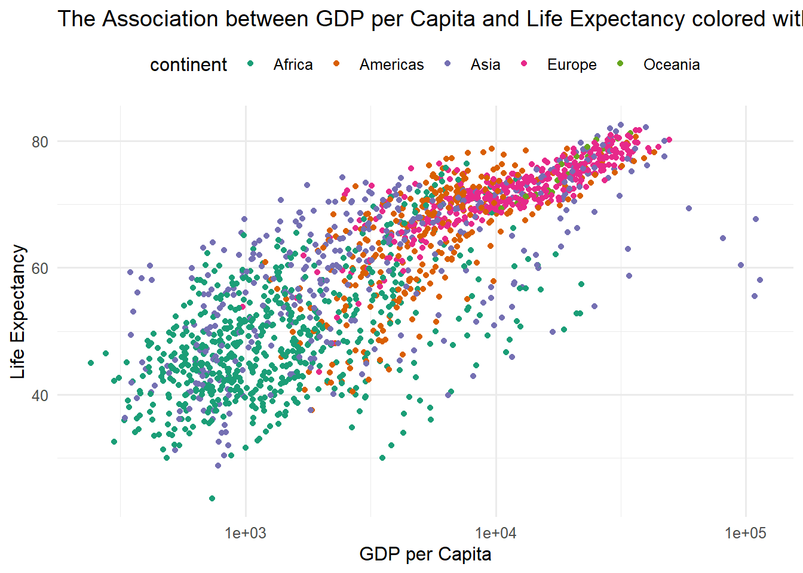
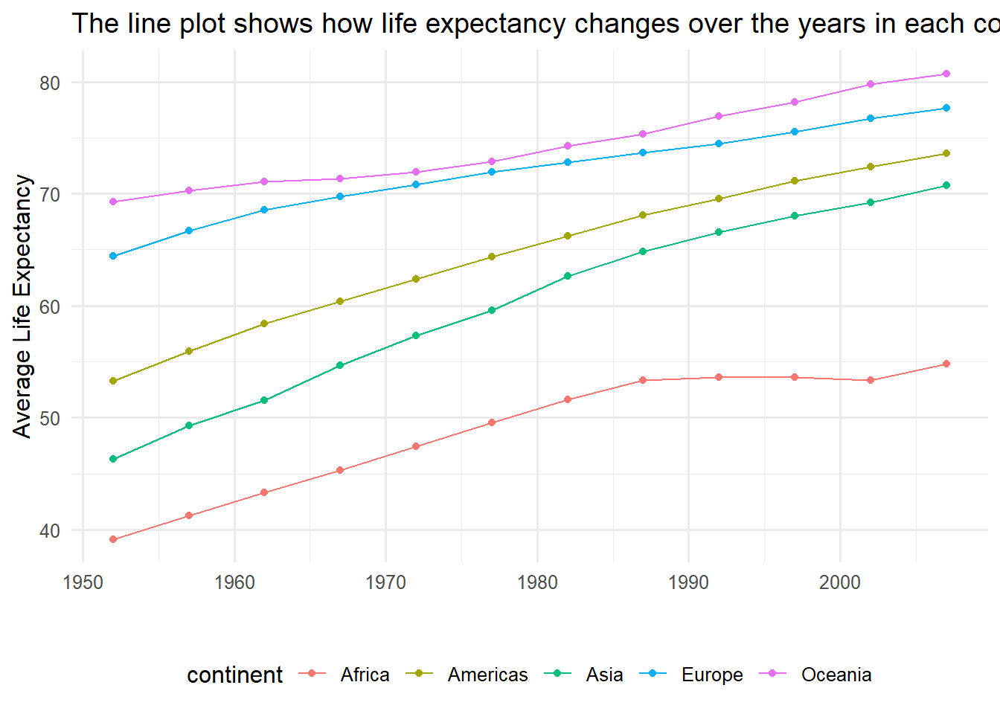
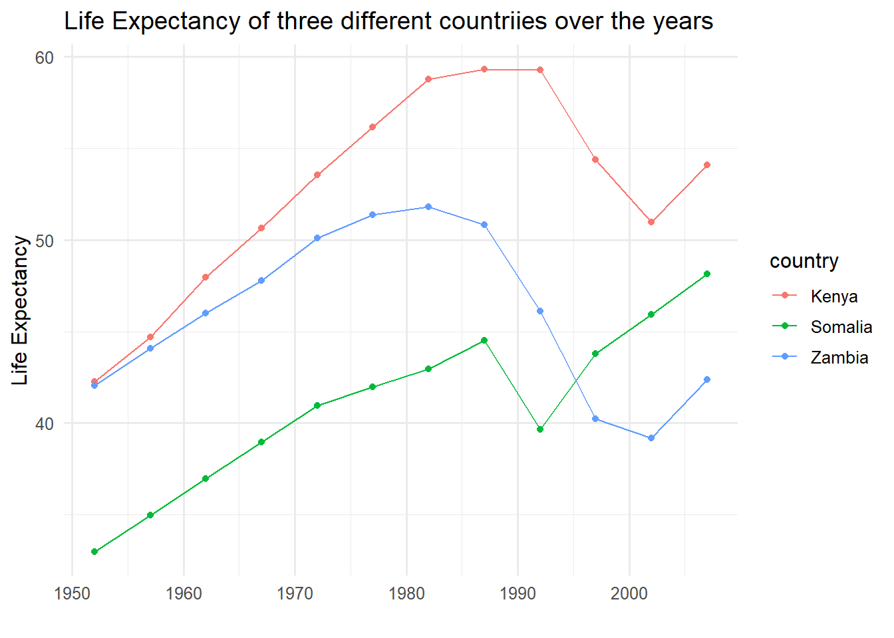

library(tidyverse)
library(gapminder)
library(scales)
theme_set(theme_minimal(base_size = 12))Introduction to Tidyverse
Data Visualization with R
Loading packages and data
First we will do exploratory data analysis which includes looking at the number of rows and columns and data types of our features. then are going to do data manipulation and cleaning if need be before we calculation and measuring anything.
gapminder |>
glimpse()Rows: 1,704
Columns: 6
$ country <fct> "Afghanistan", "Afghanistan", "Afghanistan", "Afghanistan", …
$ continent <fct> Asia, Asia, Asia, Asia, Asia, Asia, Asia, Asia, Asia, Asia, …
$ year <int> 1952, 1957, 1962, 1967, 1972, 1977, 1982, 1987, 1992, 1997, …
$ lifeExp <dbl> 28.801, 30.332, 31.997, 34.020, 36.088, 38.438, 39.854, 40.8…
$ pop <int> 8425333, 9240934, 10267083, 11537966, 13079460, 14880372, 12…
$ gdpPercap <dbl> 779.4453, 820.8530, 853.1007, 836.1971, 739.9811, 786.1134, …gapminder |>
count(year)# A tibble: 12 × 2
year n
<int> <int>
1 1952 142
2 1957 142
3 1962 142
4 1967 142
5 1972 142
6 1977 142
7 1982 142
8 1987 142
9 1992 142
10 1997 142
11 2002 142
12 2007 142gapminder |>
filter(year == 2007) |>
summarise(meana_lifeExpectancy = mean(lifeExp),
mean_GdpPercapita = mean(gdpPercap), .by = continent)# A tibble: 5 × 3
continent meana_lifeExpectancy mean_GdpPercapita
<fct> <dbl> <dbl>
1 Asia 70.7 12473.
2 Europe 77.6 25054.
3 Africa 54.8 3089.
4 Americas 73.6 11003.
5 Oceania 80.7 29810.gapminder |>
#filter(year == 2007) |>
summarise(meana_lifeExpectancy = mean(lifeExp),
mean_GdpPercapita = mean(gdpPercap), .by = continent)# A tibble: 5 × 3
continent meana_lifeExpectancy mean_GdpPercapita
<fct> <dbl> <dbl>
1 Asia 60.1 7902.
2 Europe 71.9 14469.
3 Africa 48.9 2194.
4 Americas 64.7 7136.
5 Oceania 74.3 18622.gapminder |>
ggplot(aes(gdpPercap, lifeExp, col = continent)) +
geom_point() + scale_x_log10() +
scale_color_brewer(palette = 'Dark2') +
theme(
legend.position = 'top'
) +
labs(
title = 'The Association between GDP per Capita and Life Expectancy colored with different continents',
x = 'GDP per Capita',
y = 'Life Expectancy'
)
If we see, the scatter plot alone we can notice that there is positive relationship between the GDP per capita and life expectancy. it also show that countries in African continent lie mostly on botton half of the plot which indicates that they have lower GDP per capita and lower life expectancy than most other continents.
gapminder |>
summarise(
mean_lifeExpactancy = mean(lifeExp),
.by = c(year, continent)
) |>
ggplot(aes(year, mean_lifeExpactancy, col = continent)) +
geom_line() + geom_point() +
labs(
title = 'The line plot shows how life expectancy changes over the years in each continent',
y = 'Average Life Expectancy',
x = ""
) +
theme(
legend.position = 'bottom'
)
gapminder |>
filter(country %in% c('Somalia', 'Kenya', 'Zambia')) |>
ggplot(aes(year, lifeExp, col = country)) +
geom_point() + geom_line() +
labs(
title = 'Life Expectancy of three different countriies over the years',
y = 'Life Expectancy',
x = ''
)
gapminder |>
filter(continent == 'Europe') |>
distinct(country, .keep_all = TRUE) |>
print(n = 30)# A tibble: 30 × 6
country continent year lifeExp pop gdpPercap
<fct> <fct> <int> <dbl> <int> <dbl>
1 Albania Europe 1952 55.2 1282697 1601.
2 Austria Europe 1952 66.8 6927772 6137.
3 Belgium Europe 1952 68 8730405 8343.
4 Bosnia and Herzegovina Europe 1952 53.8 2791000 974.
5 Bulgaria Europe 1952 59.6 7274900 2444.
6 Croatia Europe 1952 61.2 3882229 3119.
7 Czech Republic Europe 1952 66.9 9125183 6876.
8 Denmark Europe 1952 70.8 4334000 9692.
9 Finland Europe 1952 66.6 4090500 6425.
10 France Europe 1952 67.4 42459667 7030.
11 Germany Europe 1952 67.5 69145952 7144.
12 Greece Europe 1952 65.9 7733250 3531.
13 Hungary Europe 1952 64.0 9504000 5264.
14 Iceland Europe 1952 72.5 147962 7268.
15 Ireland Europe 1952 66.9 2952156 5210.
16 Italy Europe 1952 65.9 47666000 4931.
17 Montenegro Europe 1952 59.2 413834 2648.
18 Netherlands Europe 1952 72.1 10381988 8942.
19 Norway Europe 1952 72.7 3327728 10095.
20 Poland Europe 1952 61.3 25730551 4029.
21 Portugal Europe 1952 59.8 8526050 3068.
22 Romania Europe 1952 61.0 16630000 3145.
23 Serbia Europe 1952 58.0 6860147 3581.
24 Slovak Republic Europe 1952 64.4 3558137 5075.
25 Slovenia Europe 1952 65.6 1489518 4215.
26 Spain Europe 1952 64.9 28549870 3834.
27 Sweden Europe 1952 71.9 7124673 8528.
28 Switzerland Europe 1952 69.6 4815000 14734.
29 Turkey Europe 1952 43.6 22235677 1969.
30 United Kingdom Europe 1952 69.2 50430000 9980.gapminder %>%
filter(country == 'Somalia') %>%
print(n = 12)# A tibble: 12 × 6
country continent year lifeExp pop gdpPercap
<fct> <fct> <int> <dbl> <int> <dbl>
1 Somalia Africa 1952 33.0 2526994 1136.
2 Somalia Africa 1957 35.0 2780415 1258.
3 Somalia Africa 1962 37.0 3080153 1369.
4 Somalia Africa 1967 39.0 3428839 1285.
5 Somalia Africa 1972 41.0 3840161 1255.
6 Somalia Africa 1977 42.0 4353666 1451.
7 Somalia Africa 1982 43.0 5828892 1177.
8 Somalia Africa 1987 44.5 6921858 1093.
9 Somalia Africa 1992 39.7 6099799 927.
10 Somalia Africa 1997 43.8 6633514 931.
11 Somalia Africa 2002 45.9 7753310 882.
12 Somalia Africa 2007 48.2 9118773 926.gapminder %>%
filter(country %in% c('Somalia', 'Tanzania')) %>%
ggplot(aes(year, gdpPercap, col = country)) + geom_point() +
geom_line() +
labs(
title = 'GDP per Capita comparison between Somalia and Tanzania over the years',
color = 'Country'
) +
theme(
legend.position = 'bottom'
)